Overview
To start using ProcessMaker version 3, first become familiar with the elements of the Process Map and Designer in order to create a project. Some of the main elements of the designer in this version are described in this page.
Note 1: In previous versions of ProcessMaker, the term "Process" was used. From version 3 on, the term "project" has been introduced to refer to the creation of a process, since a project is a group of processes, meaning that more than one process can be created inside a project.
Note 2: From version 3.0.1.8. in order to avoid overwriting issues a new feature is available to forbid opening multiple browser instances of Processmaker. For more information go to: Configuration File env.ini: session_block.
Designer
In the "DESIGNER" tab, there is the list of the existing BPMN projects and their characteristics.
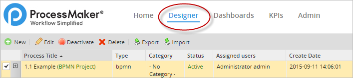
In this tab new projects can be created and opened for editing. The toolbar at the top provides six options to work with them, as well as options to filter the list of projects by category and the search option.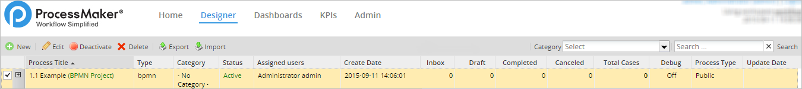
The information shown in the columns of this page is the following:
- Process Title: The title of the BPMN project or the classic process. From ProcessMaker 3, it is only possible to create "BPMN Projects".
- Type: The type of process which will be
"bpmn"meaning that the BPM project uses the BPMN 2.0 notation or"classic"for imported processes created in previous versions. - Category: The category of the process. To add new categories see Process Categories.
- Status: The status of the process, which is either "Active" or "Inactive". No cases can be executed in processes which have "Inactive" status.
- User owner: The user who created the process.
- Create date: The date when the process was created.
- Inbox: The number of cases of the process which are currently pending and appear in the users' inboxes to be worked on. These cases haven't yet been opened by the currently assigned user.
- Draft: The number of cases in process which are in draft mode, meaning that the currently assigned users have opened these cases, but haven't yet completed the current task.
- Completed: The number of completed cases in the process, meaning that the final task in the process has been reached and the case can no longer be worked on.
- Canceled: The number of canceled cases in the process. See canceled cases.
- Total Cases: The total number of cases that have been created in the process (including canceled cases, but not paused cases)
- Debug: Pauses the case when triggers are executed and displays the system and case variables, so that process designers can debug their trigger code and check how a process is modifying variables. See Debugging Triggers.
Designer Menu
The toolbar above the list of projects contains the following icons:

Note: In order to use the Edit, Status, Delete and Export options, first select an item of the list.
Note: From version 3.0.1.8 on, the Delete Cases option has been added to the toolbar.
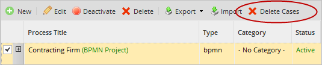
Creating a new Project
To create a new project, click on the "New" button of the designer menu as seen on the image below.
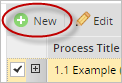
Unlike previous versions of ProcessMaker, this new version only creates projects with the BPMN 2.0 notation. Note that processes created in the classic designer CAN NOT be opened in the new designer and projects created in version 3 of ProcessMaker CAN NOT be imported or opened in the classic designer.
After clicking on "New" a window will open which has to be filled with the "Title" of the new project. Then "Description", a brief summary of the process created. And "Category" that by default is se to "no categoy". Once the new project is created, ProcessMaker will redirect to the Process Map inside the DESIGNER tab.
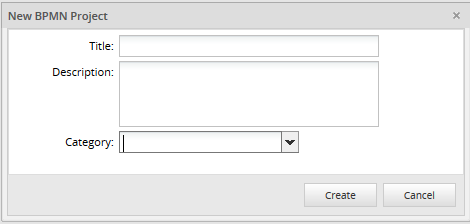
Editing a Project
Resources: The options inside the edition of a project haven't changed in relation to previous ProcessMaker versions. Take a look at this documentation to see a detailed description of each task configuration.
To edit an existing project, either double click a project in the list or select a project in the list and then click on the "Edit" button, see the image below:
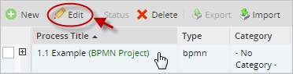
If no process is selected and the "Edit" button is clicked, the following message is displayed.
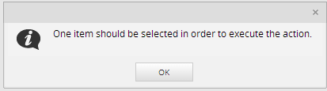
Once inside the designer, the process information can be changed by right clicking on a blank space of the Process Map and selecting "Edit Process".
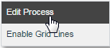
Check the Process Context Menu toolbox to see the other options of this menu. The following window will display:
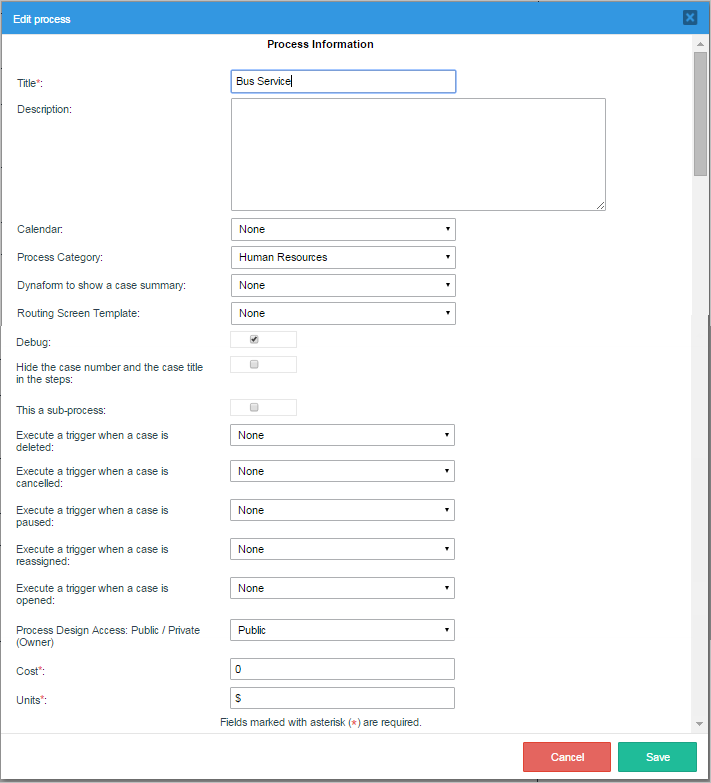
- Title. Required Field. Modify the name of the project in this field. This field accepts characters which consist of letters, numbers, (_) underscores), and (-) hyphens and characters like '$', '#', '&', etc.
- Description. Enter a brief description about the project in this text area.
- Calendar. Select a calendar from the list, which indicates the hours and days when users are expected to be at work. It is possible to create your own calendar depending on the work days and hours. If "None" is selected, then the default calendar will be used
- Process Category. Select one category from the list which will identify the project. It is possible to new categories.
- Dynaform to show a case summary. From the list, select the Dynaform which will appear on the Case Summary. If "None" is selected, then the summary will display generic information such as who is assigned to the case and when it was created, but it will not display any case data.
- Routing Screen Template. Process designers can personalize the screen template which is shown to the user when completing a task and routing to the next task in the process. Each task may have its own routing screen template.
- Debug. When designing a process, it is a good idea to activate the "Debug" option which shows when triggers are fired during routing rules and any errors which may occur. In normal production mode, error reporting is suppressed, so it is often difficult to know whether the trigger code executed correctly or not. More importantly, "Debug" mode allows to examine the values in the variables which are passed to triggers. For security reasons be sure to deactivate "Debug" mode when your process is used in production.
- Hide the case number and the case title in the steps. This option allows the case number and title be hidden from the user while executing a case. Hiding the case number may be useful if users should not know how many cases have already been executed.
- This a sub-process. Selecting this option removes the project from the list when users click on "New case" under the HOME menu, so users can't initiate cases with this process and it can only be run as a sub-process of a parent process.
- Execute a trigger when a case is deleted. Select a trigger to be fired when a case is deleted. For example, a trigger could send a notification to a user's supervisor, when the user deletes a case.
- Execute a trigger when a case is cancelled. Select a trigger to be fired when a case is canceled. For example, a trigger could remove data from an external database, when a case is canceled.
- Execute a trigger when a case is paused.Select a trigger to be fired when a case is paused. For example, a notification could be sent to members of a department when a user pauses a case.
- Execute a trigger when a case is reassigned. Select a trigger to be fired when a case is reassigned. For example, a trigger could initiate a case in one process, when a user reassigns a case.
- Execute a trigger when a case is opened. Select a trigger to be fired when a case is opened. For example, the trigger could assign value to variables that are used in conditions to open Dynaforms or execute other triggers in the first step of the task.
Available Version: From version 3.0.1.7
- Process Design Access: Public/Private (Owner) Select Public if the process may be edited by any user who has the PM_FACTORY role and can access the designer. Select Private if the user who created the process id the only one who has the ability to modify it.
Notice that there is the column Process Type that indicates whether the process is "Public" or "Private".
- Cost: This field is related to the KPI's, and it is where the managers should set up the approximate amount the idle times in the execution of the process cost. For example, if a case of the process is in the "Unassigned" status, it is not possible to charge for the idle time to any user. In that case, the "inefficiency" is calculated using the amount set in this field.
- Units: Set in this field the currency unit of the Cost field.
- Save. This option saves the properties of the project. At the time the configuration is saved, a flash message will display indicating the process properties were saved successfully.
- Cancel. This option discards any changes made in the project properties.
Note: Check the Process Context Menu toolbox to see the other options of this menu.
Showing the project status
This option shows the status of the project, which can be Active or Inactive. Cases cannot be executed in projects which have Inactive status.

When a project is selected with an "Active" status, the "Deactivate" button will appear in the toolbar. Meanwhile, projects with an "inactive" have the "Activate" button on the toolbar.

- Deactivate: To change the status of a project to "Inactive", so no cases can be executed in that project, first select the project in the list and then click on this button
- Active: To change the status of a project to "Active" so cases can be executed in a process, first select the project in the list and then click on this button.
Deleting a Project
Click on this option to delete a project. A project can only be deleted if there are no active cases in the project. If there are any active cases, either complete, delete or cancel the cases, before attempting to delete the project. If the project does not have active cases a confirm message is shown:
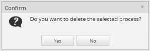
Select "Yes" if the project will be deleted, click "No" to close the message without deleting the window.
If the project has any active cases, then an error message will appear, preventing the project from being deleted.
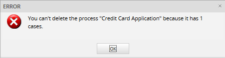
Note: Deleting a project will not remove its cases from the database.
Exporting a project
This option allows administrators to export the project directly from the designer menu. The project will be saved in a file with the ".pmx" extension. For more information, see the complete documentation on Importing and Exporting project
When exporting a project, it will not export the assignment of users and/or groups to the tasks in the project. Neither does it export any case of the project. To export user assignments and cases, along with the definition of the project, see Backing up Workspaces.
Importing a project
To import a project, click on the "Import" button, then select the project file to be uploaded in the server so it can be imported into ProcessMaker.
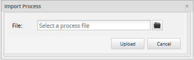
Note that only the definition of the process is imported, but user assignments and cases are not imported. For more information see the complete documentation on Importing and Exporting Projects.
Deleting all Cases of a Process
Available Version: From 3.0.1.8 on.
To delete all the cases of a specific process, after selecting a process from the list, click on the Delete Cases button. This option is available only if the user has been assigned the DELETE_PROCESS_CASES permission.

After clicking the option, a confirm message window opens with information about how many cases of the process selected will be deleted.

Click 'Yes' to confirm deleting all cases and the following message will confirm the operation. Only cases belonging to the selected process will be removed from Inbox, Draft, Paused, Unassigned, and Participated trays.

The Process Map
One of the major changes in ProcessMaker 3 is the radical improvement in the Process Map. New functionalities were included and adapted to expand ProcessMaker functionalities and provide better layout of objects in the Process Map. Some of the elements were also replaced by BPMN elements improving the horizontal design. However, the graphical drag-and-drop interface, which allows elements to be easily added and deleted and rearranged, was kept.
The main characteristics of the new designer include:
- The ability to select multiple elements at a time in the Process Map and move them as a group without changing the structure of the process.
- Annotations can be connected to a task.
- Processes are auto saved every 15 seconds.
- Routing rules were replaced by BPMN Gateways.
- Elements, such as tasks and gateways are delimited with yellow dots, which can be dragged & dropped onto other elements to create connections.
- Elements in the designer can be moved using the
left,right,downandupkeys on the keyboard. - A new toolbox provides direct access to design elements such as: Dynaforms, Output Documents, Input documents, Triggers and Database Connections.
In order to create a process, it is necessary to know the elements that make up the Process Map:
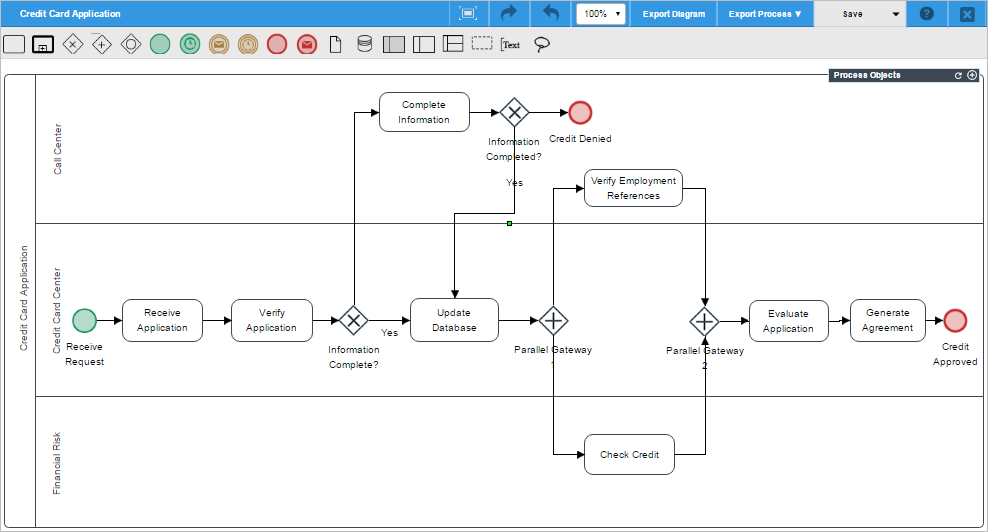
Note: It is not recommended to work on the designing of the same process using different tabs or windows of the browser. ProcessMaker does not work properly under such circumstances.
Quick Toolbar
From ProcessMaker version 3.0.1, designers have the ability to easily complete the next step in the design using the "Quick Toolbar" option. This option shows the next available elements for an element added in the Process Map. For example, for a task, the next available elements may be another task, an intermediate event, an end event, a gateway, or the flow to another element. If the element can be configured, the configuration option will also appear in the options of the element as well as the "Delete" option.
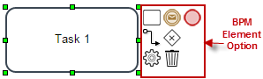
To better see how this feature works take a look at the figure below. When creating a new project there is already a start event added in the Process Map. When clicking on the element, the next available elements for the start event are shown. By simply clicking on the next element, for example a task, it is added in the Process Map and it must only be placed in the position in the map. The flow between elements is also added when using this option.
In the figure below, after the task "Request leave" is added, the next elements: task "Approve leave request", exclusive gateway "Approved?", and the end element "Send Confirmation" are also added using the "BPM Element Option" in the Process Map.

| Warning: The quick toolbar of a start event shows a gateway but the process flow cannot start with a gateway, the gateway will be added into the designer canvas but it won't be connected to the start event. This is a known issue that will be fixed in upcoming ProcessMaker versions. |
Element Connection Validation
Also, from version 3.0.1, when connecting two elements in the process map, the next available element is painted in green. Meanwhile, connections not valid between elements will be painted in red.
For example, when connecting a start event and a task already added in the process map, the connector between the task and the start event will have a green color representing availability to connect:
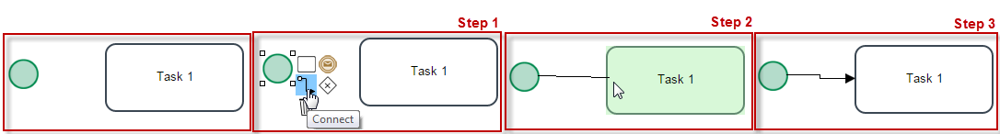
When making an invalid connection such as between a start event and an end event, the element will become red making it impossible to connect.
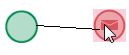
Toolboxes
The title of the project and the main options are located at the Top Toolbar. The BPMN 2.0 elements available to design processes are located right under the Top Toolbar. The Main Toolbox with the options to manage the process, create variables and forms is located at the right side of the Process Map, nevertheless it is a floating menu which can be minimized or placed in another place of the process map.
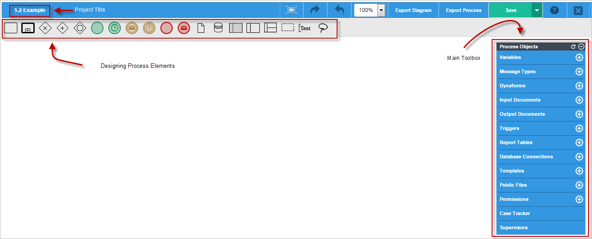
The Top Toolbar
The top toolbar displays the title of the Project but also shows the following options to modify the behavior of the Process Map:

Also in the top toolbar, the button "Zoom" appears next to the others. To demonstrate how it works, take a look at the next image:

- Check out the difference between the sizes: 75% and 150%:
- 75% in size
- 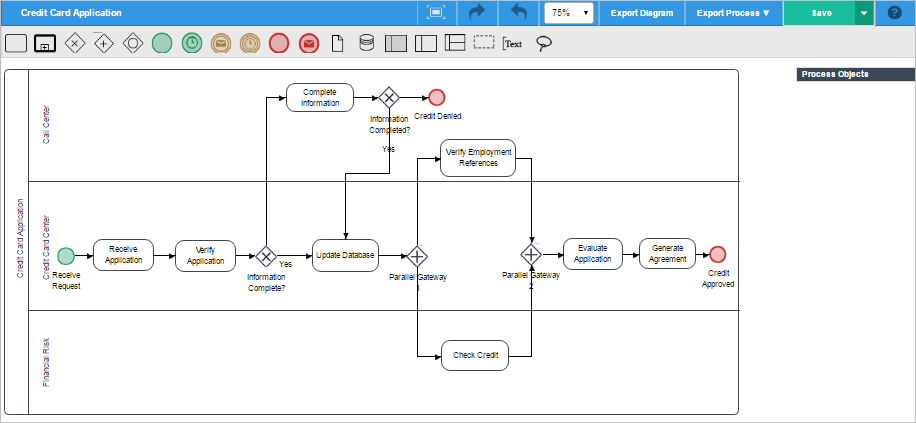
- 150% in size

As well, the toolbar has also two options to export both the Diagram and the Process. The description of both options are in the next image:

The toolbar has also a "Save" and "Save as" option next to the previously explained buttons. When either of this buttons are clicked a quick message will appear at the top of the designer indicating that the process was saved successfully. If an error occurred or the session was lost while saving the process, an error message will appear at the top of the designer.
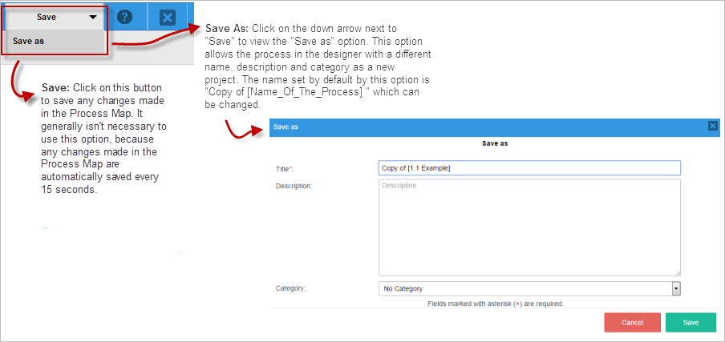
Click on "Cancel" to discard all changes. After clicking "Save" the new process will be in the designer to start making editions. It will be also listed among the rest of the projects with the new Title given.
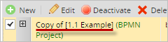
Shapes Toolbox
The shapes toolbox is located below the top toolbox at the upper side of the designer. This toolbox includes the BPM elements with which the processes will be designed such as: Tasks, Sub processes, Gateways, Events, Artifacts, among others.
The elements included in this toolbox are described in the image below:
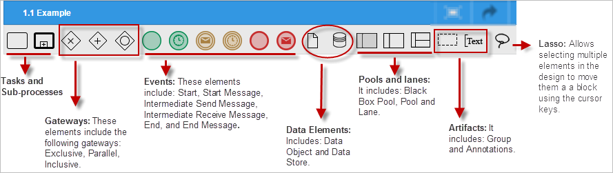
Main toolbox
This toolbox contains the options to manage the process, create Variables ,Dynaforms, Input and Output Documents, Report Tables, Database connections, Templates, Public files, Message Types, Triggers, Permissions , Case Tracker and Supervisors:
One of the main characteristics of this toolbox is the ability to move it to any place in the Process Map.
This toolbox includes the following process design elements:
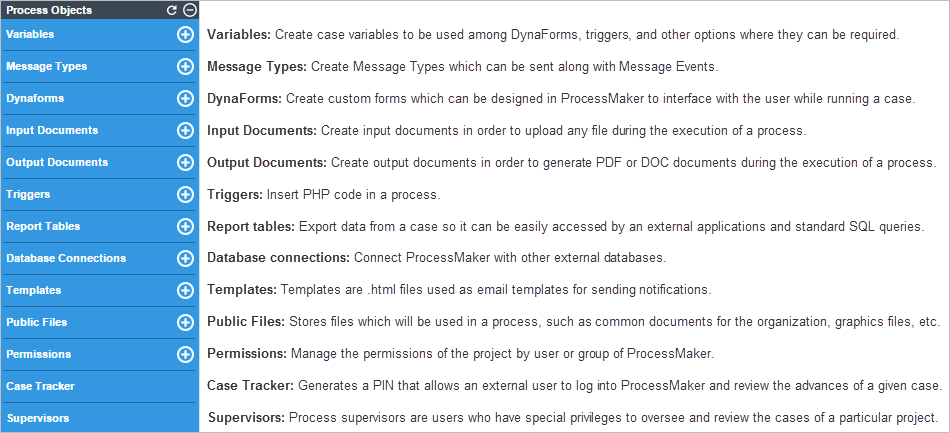
Process Context Menu
- Edit Process: This option allows the process name and its description to be modified. It also provides options to activate the Debug Mode and set a calendar for the process. To start designing a process and adding elements to the Process Map, right click anywhere in a blank area on the map and select an option from the menu.
- Enable grid lines: By default, a process is created without any grid lines, choose this option to enable them. As follows the difference between these options can be seen.
Context Menu
When right clicking on an element added in the process map such as a task, an event, the process map itself, etc. a menu is displayed. This menu is called the context menu and its options depend on the configuration of the element as well as its name, for example, the context menu of a task will be called "Task Context Menu"
Task Context Menu
To edit a task, right click on a task to display the following contextual menu.
- Task Types: Select the task type in order to model processes that are technically executable.
Note: DO NOT change the type of task while there are cases running or assigned to that task. If trying to do that, cases might become unreachable. Instead, it is possible to change the type of task in the process even if there are cases running, but any of them is assigned to the task.
- Marker Type: Select the marker type of the task.
- Steps: In ProcessMaker a step is a piece of work that forms a clearly defined action within a task. Select this option to add a step to the task. See the section Defining Steps.
- Assignment Rules: Select this option to assign the task to user(s) or group(s) or ad hoc users, who will have permission to access and fulfill the task. See the section Assigning Users to Tasks.
Note: DO NOT change the assignment rule of a task while there are cases running or assigned to that task. If trying to do that, cases might become unreachable.
- Edit Label: Edit the label of the task.
Note: Take into account that the name of the task should not be changed when there are cases being running or assigned to the task. If needing to change the name of the task, then take into account that cases that are assigned to the task will not be updated in any list.
- Delete: Select this option to delete the task.
Note: DO NOT delete a task while there are cases running or assigned to that task. It causes errors an cases become unreachable. Instead, if needing to delete a task in the process make sure no case is running or assigned to the task.
- Properties: Select this option to define how a task should be handled. For instance, how to transfer assignment to different users, time limits, email notifications, whether it is a starting task, ad hoc assignment, and the definition of case labels. See the section Configuring Tasks
Gateway Context Menu
In this version, 4 new gateways are introduced, which have different options in their contextual menus. Right click over the gateway to see its contextual menu:
- Gateway Type: Select the gateway type which could be: Exclusive, Inclusive or Parallel.
- Properties: Edit the routing rule of the gateway. Properties available in Inclusive and Exclusive gateways.
- Edit Label: Edit the label of the gateway.
- Delete: Delete the selected gateway.
- Default Flow: Define a default flow if any of the conditions are not fulfilled.
See the Gateway documentation to understand how to use them.
Event Context Menu

The menu options for events are different, depending on the type of event. Right click on the event to display the event context menu and select an option.
- Event Type: Select the type of Start, Intermediate or End event.
- Edit Label: Edit the label of the selected event.
- Delete: Delete the selected event.
For more information about the other options see the documentation for events.